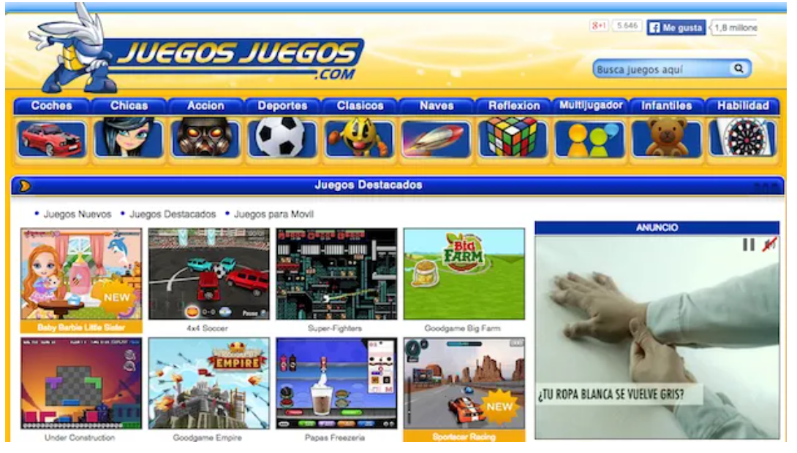
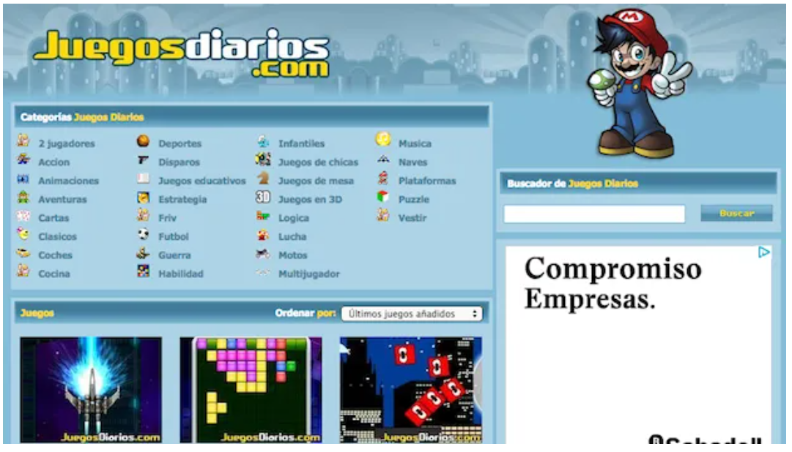
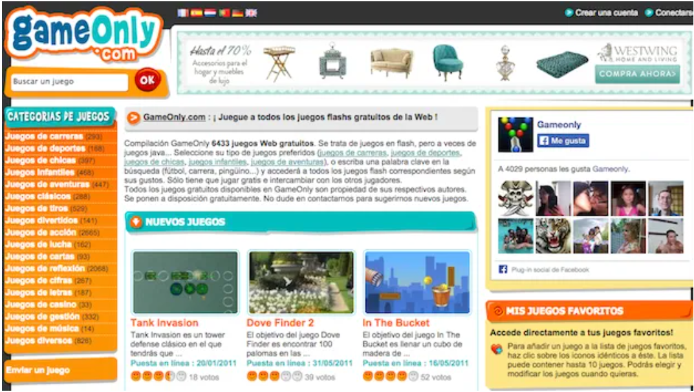
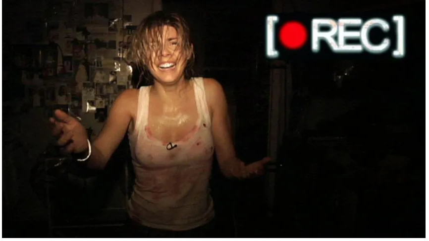

Las 5 mejores páginas web de juegos y minijuegos online
Los minijuegos podrían definirse como todo aquel juego que se juega mediante un navegador web (Internet Explorer, Mozilla Firefox, Opera, Google Chrome, Safari...) y que han ido creciendo a la par que lo hacía la Web.
Lo más destacable de estos juegos online es que el usuario rara vez necesita realizar una instalación extra para jugar. Simplemente basta con elegir el juego, esperar a que el mismo finalice su carga, y disfrutar del entretenimiento.
Estos minijuegos se ejecutan en el navegador, por lo que puede ser necesario que en alguna ocasión haya que instalar alguna actualización o plugin.
Existen juegos de muy diversos géneros, como acción, estrategia, aventuras, plataformas, simulación, deportes, carreras, música y un largo etcétera. Estas suleen ser las categorías presentes en las 5 mejores páginas web de juegos y minijuegos online.
Estas páginas web suelen incluir listados donde aparecen las mejores puntuaciones logradas por los jugadores, así como un ranking con los minijuegos más famosos de la semana.
Otra de las ventajas de este tipo de juegos es que no se necesita una conexión de alta velocidad para disfrutar de pequeños momentos de entretenimiento.
A continuación podrás descubrir las 5 mejores páginas web de juegos y minijuegos online:
- Juegosjuegos.com
- Juegosdiarios.com
- Gameonly.com
- Mundijuegos.com
- Minijuegos.com
Juegosjuegos.com

Juegosjuegos.com presenta su colección de minijuegos organizada en diferentes categorías, ya sean juegos de carreras, juegos de deportes,juegos de mesa, juegos infantiles, juegos de aventuras, juegos de acción, o cualquier otro género de los muchos en los que se divide el mundo "gamer".
También aparece la organización mediante la que seleccionar juegos online según su publicación, o los mejores juegos votados por los usuarios. De esta forma acceder a tu contenido favorito es mucho más sencillo.
Si buscas contenido para tus dispositivos móviles, la página web de minijuegos también incluye sección propia con numerosos juegos para smartphone.
Juegosdiarios.com

En esta web nunca podrás aburrirte ya que siempre se actualizan a diario los mejores juegos online de la red. No obstante, si en vez de consultar los últimos juegos añadidos quieres conocer los minijuegos más buscados por los usuarios, simplemente tienes que hacer uso de su nube de tags, situada en la parte inferior izquierda de la página web.
Por supuesto, los minijuegos online de Juegosdiarios.com aparecen organizados en diferentes categorías para que el usuario acuda de forma directa a buscar juegos de su género preferido.
Además la página web de minijuegos cuenta con presencia activa en las redes sociales, donde además de recomendar juegos y bromas encontrarás artículos de diferente índole, extraídos del propio blog del sitio web.
Dentro de cada minijuego puedes votar el mismo, o asignarlo como favorito para crear tu propia colección para los días de lluvia.
Gameonly.com

GameOnly cuenta en su haber con una recopilación de más de 6400 minijuegos gratuitos.
Se trata de juegos flash en su mayoría, aunque no sería extraño encontrar algún juego basado en java, al más puro estilo teléfono móvil.
A lo largo y ancho de la página web puedes seleccionar tu tipo de juegos preferidos, ya sean juegos de carreras, juegos de deportes,juegos de mesa, juegos infantiles, juegos de aventuras, juegos de acción, o cualquier otro género que se te ocurra.
Por supuesto, siempre puedes recurrir a su buscador, situado en la zona superior de la página web de minijuegos, y acceder a todos los juegos flash correspondientes.
En el sito web puedes configurar tu propia colección con tus juegos favoritos. Para añadir un juego a la lista de juegos preferidos, haz clic sobre el icono del corazón que aparece debajo de cada contenido y crea tu lista de hasta 10 juegos. En cualquier momento podrás elegir y modificar los juegos almacenados en ella.
Lo Último
Jack Dorsey abanoda Twitter y la red social cambia de políticas de privacidad para mejorar la experiencia que tienen los usuarios dentro de la aplicación.
Twitter está cambiando sus políticas, en los últimos meses ha hecho una serie de cambios destinados a mejorar la manera en la que los usuarios utilizan la red social. El último cambio llega justo un día después de que el puesto de CEO de la compañía cambiase de manos. Y, es que, la noticia más sonada en la red social fue que Jack Dorsey abandonaba su puesto,
El sustituto es Parag Agrawal y, ahora, todas las quejas acerca de la red social tendrán que ir dirigidas hacia esta persona. Puede que esta medida llegue directamente de su mano, pero esto sería poco probable. Lo que ha hecho Twitter en la nueva actualización de sus políticas es que se controlen los contenidos que se publican.
Esta medida de control no tiene absolutamente nada que ver con la censura, de hecho, lo que se quiere es que los usuarios tengan una mayor seguridad o estén más seguros de lo que hace la aplicación. Esta medida se centra en la privacidad, poniendo el foco en lo que se comparte dentro de la red social.
Lo que quiere Twitter es que los usuarios sean capaces de denunciar fotografías o vídeos los cuales atenten contra su privacidad. Esto hace que si, por ejemplo, algún usuario publica una fotografía de tu dirección, rostro o algo que tenga con ver contigo; tú, como usuario, seas capaz de avisar a Twitter de que esta fotografía atenta contra la privacidad.
La llegada de esta nueva característica es algo que muchos usuarios llevan esperando, pero lo más seguro es que una parte del público se tome esto como una medida de control en lugar de algo favorecedor para determinados perfiles de usuarios. Habrá que esperar para conocer la acogida que tiene esta nueva política y, sobre todo la manera en la que funciona.
Las 30 mejores películas de terror o de miedo de la historia
Si disfrutas de un buen largometraje de miedo, en esta lista hemos reunido las 25 mejores películas de terror de la historia que puedes ver ahora mismo, tanto clásicas como modernas.
No es habitual que comencemos nuestras listas pidiendo perdón, pero como aficionados, entusiastas y fanáticos de las películas de terror, consideramos que en esta ocasión estamos obligados a hacerlo.
Si por nosotros fuera, esta lista habría alcanzado los 50 títulos , pero por cuestión de tiempo y respeto a vuestro tiempo libre, nos vemos condenados a reducirla a 30 escasas películas.
El género de terror siempre ha sido uno de los más maltratados por la prensa especializada y se ha argumentado que es un género dedicado a un público juvenil con bajas exigencias y fácil de entretener. Sin embargo, existe un reducido conjunto de cintas que, caprichos del destino, consiguieron contentar tanto a crítica como a público.
Muchas de estas cintas están presentes en esta lista con las 30 mejores películas de terror de la historia, en la que encontrarás tanto títulos clásicos como largometrajes estrenados en la última década.
Si echas de menos alguna película o, por el contrario, crees que merecemos ser atacados por cenobitas por la presencia de alguna cinta que no es de tu agrado en este recopilatorio de las mejores películas de miedo de la historia, lo sentimos mucho.

El argumento de [REC] nos pone en la piel de Ángela Vidal, una joven reportera de una televisión local a quien le toca entrevistar a un grupo de bomberos que, a lo largo de la noche acuden un edificio de La Rambla de Barcelona en auxilio de una anciana.
Esto sólo es el comienzo de una larga pesadilla, tras descubrir que un peligroso virus que convierte al huésped en un animal sediento de sangre se ha expandido por el edificio.
Grabado con el formato de "falso documental" y siempre con la cámara al hombro, muchos critican que la cinta es un constante mareo, pero sus largos planos secuencia y, sobre todo, la tan conseguida sensación de estar en un auténtico pasaje del terror, convierten a [REC] (y en mayor o menor medida sus secuelas) en la mejor película de terror española.